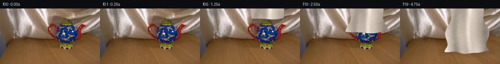

![首帧]()

Round 00
2026-11-05T08:20:52.714835+00:00像素候选变化代码 +179/−0inspection 更新
pixels a2014f04fa10e4fb · code 00fdfbbb27f777ba
查看本轮 generate.py 真实 diff
--- previous/generate.py +++ current/generate.py @@ -0,0 +1,179 @@ +from pathlib import Path + +import numpy as np +from PIL import Image, ImageDraw, ImageFilter, ImageFont + +from artifact_io import save + + +ROOT = Path(__file__).resolve().parent +W, H = 256, 144 + + +def smoothstep(edge0, edge1, value): + value = np.clip((value - edge0) / (edge1 - edge0), 0.0, 1.0) + return value * value * (3.0 - 2.0 * value) + + +def smooth_noise(seed=157): + rng = np.random.default_rng(seed) + raw = rng.normal(0, 1, (H, W)) + lo = raw.min() + hi = raw.max() + im = Image.fromarray(np.uint8(255 * (raw - lo) / (hi - lo))) + im = im.filter(ImageFilter.GaussianBlur(2.4)) + a = np.asarray(im, dtype=np.float32) + return (a - a.mean()) / (a.std() + 1e-6) + + +def cloth_layer(frame_index, grain): + """Return RGB cloth, soft alpha mask, and the hem height for one frame.""" + if frame_index == 0: + return None, None, -20.0 + + # The sheet is lowered at nearly constant speed, then makes two small + # settling movements after reaching the tabletop. + travel = min(frame_index, 17) / 17.0 + hem_center = -8.0 + 122.0 * travel + if frame_index == 18: + hem_center = 115.1 + elif frame_index == 19: + hem_center = 116.0 + + yy, xx = np.mgrid[0:H, 0:W].astype(np.float32) + sway = 1.15 * np.sin(frame_index * 0.39) * np.sin(np.pi * travel) + # A tiny y-dependent meander keeps the two hanging edges from looking cut + # with a ruler, while remaining stable from frame to frame. + center = 171.0 + sway + 0.8 * np.sin(yy / 29.0 + 0.35) + + # The fabric is narrow above the pot, broadens over the round body and its + # red protrusions, then flares where excess cloth meets the table. + body_bulge = 12.0 * np.exp(-((yy - 67.0) / 27.0) ** 2) + lid_neck = -3.0 * np.exp(-((yy - 27.0) / 15.0) ** 2) + settle = smoothstep(0.72, 1.0, travel) + pooling = (10.0 + 3.0 * smoothstep(17.0, 19.0, frame_index)) * settle + pooling *= np.exp(-((yy - (hem_center - 4.0)) / 13.0) ** 2) + half_width = 43.0 + body_bulge + lid_neck + pooling + + # Slight asymmetry accounts for the handle at left and spout at right. + left = center - half_width - 1.5 * np.exp(-((yy - 57.0) / 18.0) ** 2) + right = center + half_width + 2.2 * np.exp(-((yy - 55.0) / 18.0) ** 2) + + q = (xx - (171.0 + sway)) / 60.0 + hem = hem_center - 6.0 * np.abs(q) ** 1.65 + hem += 1.15 * np.sin((xx - 118.0) / 10.5 + frame_index * 0.12) + # Once on the table, the free edge relaxes into several shallow pools. + hem += settle * 1.1 * np.sin((xx - 108.0) / 6.8) + + # Analytic one-pixel antialiasing for the sides and free hem. + a_left = smoothstep(-0.8, 0.8, xx - left) + a_right = smoothstep(-0.8, 0.8, right - xx) + a_hem = smoothstep(-0.8, 0.8, hem - yy) + alpha = a_left * a_right * a_hem + + # Champagne silk: broad vertical folds, narrow specular ridges, small + # woven-scale variation, and a shaped highlight over the rounded pot. + phase1 = (xx - center) / 12.6 + 0.38 * np.sin(yy / 31.0) + phase2 = (xx - center) / 6.2 - yy / 43.0 + broad = 19.0 * np.sin(phase1) + fine = 7.5 * np.sin(phase2) + ridge = 34.0 * np.maximum(np.cos(phase1 - 0.55), 0.0) ** 9 + trough = -24.0 * np.maximum(np.cos(phase1 + 2.15), 0.0) ** 5 + directional = -10.0 * q + pot_highlight = 15.0 * np.exp(-((xx - 152.0) / 24.0) ** 2 - ((yy - 68.0) / 39.0) ** 2) + pot_shadow = -15.0 * np.exp(-((xx - 199.0) / 18.0) ** 2 - ((yy - 67.0) / 35.0) ** 2) + + distance_to_hem = hem - yy + lower_fold = settle * np.exp(-np.maximum(distance_to_hem, 0.0) / 10.0) … diff truncated; 92 more lines …